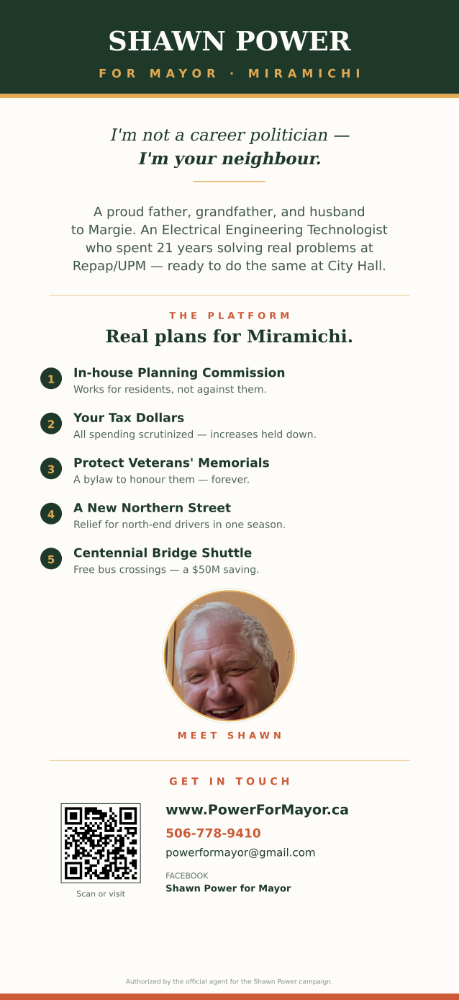

Rack Card Proof
Two-sided, 4 × 9 inches. This is the design that would go to the printer. Have a look at both sides — if anything should change (wording, photo, platform items, ordering), let me know what to tweak.
Front

Back

Print specifications
| Trim size | 4" × 9" |
| Bleed | 0.125" on all sides (design extends to 4.25" × 9.25") |
| Safe zone | All text is at least 0.25" inside the trim line — nothing critical will get cut off |
| Resolution | 300 DPI (high-res print quality) |
| Color space | sRGB — printer will convert to CMYK if needed |
| Format | PDF (preferred by printers) — high-res PNG also available |
| Fonts | Playfair Display (serif), Outfit (sans) — both embedded in SVG; printer sees converted vector shapes, no missing-font risk |
Print files — send these to the printer
PDFs are the standard print format. Send both front and back to your printer — they'll know what to do.
⬇ Front (PDF) ⬇ Back (PDF)Backup formats — high-res PNGs and editable SVG sources, in case the printer requests them:
Front (PNG, 300 DPI) Back (PNG, 300 DPI) Front (SVG) Back (SVG){kind=link}
{kind=link}
{kind=link}
{kind=link}
Things to review
- Intro quote — "I'm not a career politician — I'm your neighbour." Taken from the About section. Change to something else if you prefer.
- Bio paragraph — 6 short lines on the back. Shortened from the full About copy for space. Full version is on the website.
- Platform items — 5 planks with a one-liner each. If any wording feels off, tell me the exact plank and I'll edit.
- Contact block — currently shows website, email (
powerformayor@gmail.com), and the Facebook Page. If Shawn has a campaign phone number, I can add that. - Authorized-by line — at the very bottom. Required on most political material in Canada. The placeholder says "Authorized by the official agent for the Shawn Power campaign." If there's a specific official agent name / address required under NB law, send it and I'll put it in.
- QR code — points to
https://powerformayor.ca. Tested and working. - No photo on the front — the front is type + crest because the existing photos aren't high-res enough for a full-bleed front print (the transparent PNG is only 495 × 504 pixels; at 300 DPI that's barely 1.6 inches printable). If Shawn can get a high-res photo (1800 × 2700 pixels or larger, taken with a real camera or a newer phone in max-quality), I can produce a photo-front variant for comparison.